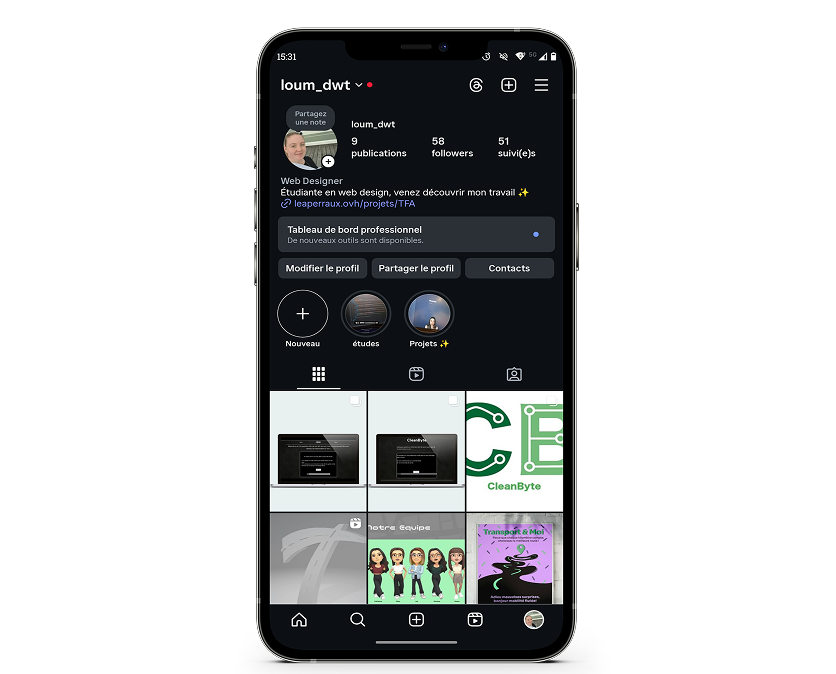
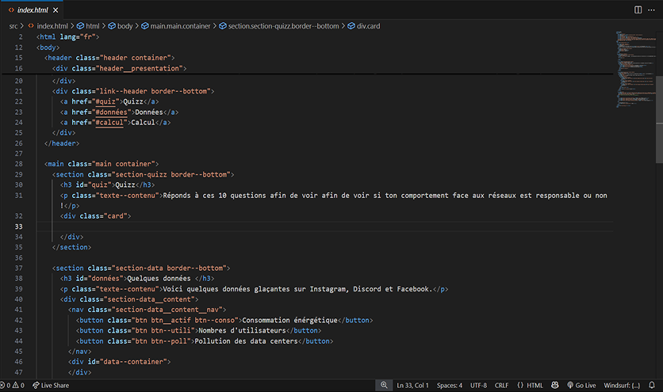

Processus de création
01
Compréhension du projet
Le 20 février 2025 sone le début de notre second projet avec la réception du briefing. À partir de ce moment, nous avions exactement 23 jours pour créer ce projet. Il s'agit, comme vous l'aurez peut-être compris, d'un projet de groupe.
L'objectif : créer une expérience interractive basée sur un jeu de données.
Les livrables attendues sont :
- un jeu de données en Json;
- un site web responsive présentant l'expérience interactive;
- une expérience interactive exploitant les données créées;
- un stand préparé pour le jour du jury;
- une affiche de présentation du projet;
- des contenus graphiques et textes permettant de promouvoir le processus de création ainsi que le projet sur les réseaux.
Coté contraintes :
- le projet doit être réalisé par groupe de 3 à 4 personnes;
- chaque groupe doit créer son propre jeu de donées;
- l'expérience interractive et le site de présentation doivent être exloitables dans un navigateur web;
- tous les livrables web doivent être responsive;
- obligation d'utiliser Git pour la gestion de version et un workflow basé sur NPM.
02
Communication
Dans ce projet, un deuxième défis, plus discret mais tout aussi important, s'est également présenté à nous.
En effet, tout au long de notre travail, nous devions respecter plusieurs échéances précises pour partager nos idées, nos avancées et nos différentes étapes de création sur les réseaux sociaux.
Ce volet du projet relevait davantage de la communication, nous invitant à réfléchir à la manière de valoriser notre travail, à adapter notre message à notre public et à maintenir une certaine régularité dans nos publications
03
Phase de réflexion
Place à la structure : l'objectif est de poser une base claire et harmonieuse, sans s'attarder sur les visuels. J'utilise des croquis, des inspirations et plusieurs essais de wireframes pour tester la disposition des éléments.

Cette phase me permet de valider :
- l'organisation générale;
- la hiérarchie visuelle;
- la lisibilité;
- les tailles de textes, espacement et rythmes.
Explorer plusieurs versions m'aide à trouver le meilleur équilibre pour une navigation fluide et intuitive.
04
Gestion des données
Une fois le sujet défini, il à fallut partir en quête d'infromations. Autant dire que cette étape, bien qu'indispensable, n'était pas la plus passionnante du projet.
Entre les recherches, le tri des données et la vérification des sources, le travail à demandé rigueur et patience.
Une fois toutes les informations réunies l'un des membres de l'équipe s'est chargé de les organiser et de les encoder proprement dans notre document JSON, afin de structurer la base de données qui allait nourir le reste de notre projet.
05
Mise en forme des idées
En explorant le sujet, nous avons eu l'idée de limiter notre impact écolorgique en concevant un site éco-responsable.
Cette phase visait à structurer le contenu sans encore penser aux visuels : seulement des formes simples pour organiser les éléments de manière claire et logique. J’ai réalisé plusieurs croquis à la main, pris des inspirations variées et testé différentes versions de wireframes.
Cela m’a permis de trouver le bon équilibre visuel, en travaillant aussi les tailles de texte, les espacements et la hiérarchie pour garantir une bonne lisibilité.
06
Développement
Après une longue phase de conception, place au développement. Dans notre groupe, deux personnes sur quatre ont pris en charge le code.
Nous avons utilisé HTML, CSS, JS et JSON. De mon côté, je me suis occupée principalement de l’HTML et du CSS, ainsi que d’une partie du JS. Le développement est une étape clé : c’est là que le projet prend vie et devient accessible.
Comme souvent, nous avons rencontré des difficultés et dû faire des choix par manque de temps. Malgré tout, chaque avancée concrète nous a motivé. Voir le site évoluer reste, pour moi, l’une des plus grandes satisfactions.
07
Résultats et apprentissages
Voilà, nous y sommes ! Le projet est terminé, c’est le moment de la mise en ligne et du recul.
Ce premier site m'a permis de découvrir le terrain, d'identifier mes forces et mes axes d'amélioration, tout en mettant en avant mes visuels graphique préférés.
Certaines décisions ont été prises dans l'urgence, mais chaque étape m'a permis d'évoluer.
Design
Typographie et couleur
Principales
#FFFFFF
#000000
Secondaires
#D9D9D9
#222222
#F5F5F5
Segoe UI
Regular
Exemple
Titre 23px
Bienvenue dans votre premier site éco-responsable !
Texte 16px
Grâce à ce site, nous espérons vous faire prendre conscience que votre plue grande passion est aussi votre plus grand problème !
Hiérarchie et grilles
Système de grilles
Téléphone
Colonnes: 5
Margin: 20px
Gutter: 20px
Tablette
Colonnes: 7
Margin: 50px
Gutter: 20px
PC
Colonnes: 9
Margin: 100px
Gutter: 20px
Icones


Espacements
20px
40px
60px
80px
100px
Ce projet m’a permis d’apprendre le travail en groupe dans ce domaine.
Il m’a appris à faire confiance à d’autres personnes pour un projet important. Il m’a aussi permis de comprendre que dans ce métier comme dans d’autres, certaines personnes ne travaillent pas. Niveau code, ce projet m’a apporté beaucoup de connaissances. Cela m’a aussi appris à respecter des contraintes aussi strictes que : un site écologique.